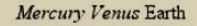

属性选择器（Attribute selectors）
属性选择器
a[target] 带有 target 属性
a[target="_blank"] 带有 target 属性，属性值为 _blank ，在新标签中打开
a[href^="/index"] 以 /index 开头
[class|="chair"] 以chair开头
[class*="chair"] 包含chair
[title~="chair"] 包含单词 chair
a[href$=".doc"] 以 .doc 结尾
[type="button"] 指定类型
在其他标记语言中不能使用类和ID选择器，为此，CSS2引入了属性选择器。
属性选择器是指含有[ ]的选择器，一种特殊类型的选择器，它根据元素的 属性 和属性值 来匹配元素。
它们的通用语法由方括号 ([ ]) 组成，其中包含属性名称，后跟可选条件以匹配属性的值。 (等号前面的符号就是可选条件）
属性选择器根据其匹配属性值的方式可以分为两类： 存在和值属性选择器以及子串值属性选择器。（匹配确切属性值的选择器和匹配包含特定属性值的选择器。）
可以加多个属性选择器：表示需同时匹配多个属性选择器。
参考：https://blog.csdn.net/jdbdh/article/details/84317656#2321Presence_and_value_attribute_selectors_208
谨记：下面的介绍都是使用元素选择器加属性选择器。——元素选择器[属性选择器]
介绍
1.存在和值属性选择器（Presence and value attribute selectors）
1、元素[attr] ：选择所有带有attr属性的元素
例子：
a[href][title] { font-weight: bold; }
（a元素必须同时带有href属性和title属性，文本的字体粗细才能显示为加粗）
2、元素[attr="val"] ：选择所有带有attr属性且属性值完全匹配val的元素（属性值连空格都不放过）
例子：
a[href="http://www.w3.org/"][title="W3C Home"] { font-size: 200%; }
（a元素的href属性和值、titile属性的值必须完全匹配）
注意：id选择器和指定id属性选择器不是一回事：h1#page-title和h1[id="page-title"] 有微妙但很重要的的差别。（特殊性（权值）的差别）
3、元素[attr~="val"] ：选择所有带有attr属性且属性值部分匹配val的元素，~波浪号是其中一个属性值的意思（要求：属性值列表其中一个属性值为val，~用空格分隔的词来完成选择）
例子：
HTML：
<span class="baren rocky">Mercury</span>
<span class="cloudy baren">Venus</span>
<span class="life-bearing cloudy">Earth</span>
CSS：
span[class~="baren"] { font-style: italic; }/* 匹配前两个元素。*/
效果图：

注意：p.waring与p[class~="warning"]等价
4、元素[attr|="val"] ：选择 attr=val或attr以val开头的所有元素（这种属性最常见的用途是匹配语言值）
2.子串值属性选择器（Substring value attribute selectors）
1、元素[attr^="val"] 选择attr属性值中以"val"子串开头的所有元素
2、元素[attr$="val"] 选择attr属性值中以"val"子串结尾的所有元素
3、元素[attr*="val"] 选择attr属性值中包含"val"子串的所有元素
例子：
span[class^="bar"] { background: silver; } /*匹配第一个元素*/
span[class$="y"] { font-weight: bold; } /*匹配第一个和第三个元素*/
span[class*="cloud"] { font-style: italic; } /*匹配第二个和第三个元素*/
<span class="baren rocky">Mercury</span>
<span class="cloudy baren">Venus</span>
<span class="life-bearing cloudy">Earth</span>
效果图：
举个栗子：
存在和值属性选择器（Presence and value attribute selectors）
HTML：
我的食谱配料: <i lang="fr-FR">Poulet basquaise</i>
<ul>
<li data-quantity="1kg" data-vegetable>Tomatoes</li>
<li data-quantity="3" data-vegetable>Onions</li>
<li data-quantity="3" data-vegetable>Garlic</li>
<li data-quantity="700g" data-vegetable="not spicy like chili">Red pepper</li>
<li data-quantity="2kg" data-meat>Chicken</li>
<li data-quantity="optional 150g" data-meat>Bacon bits</li>
<li data-quantity="optional 10ml" data-vegetable="liquid">Olive oil</li>
<li data-quantity="25cl" data-vegetable="liquid">White wine</li>
</ul>
CSS：
/* 所有具有"data-vegetable"属性的元素将被应用绿色的文本颜色 */
[data-vegetable] {
color: green;
}
/* 所有具有"data-vegetable"属性且属性值刚好为"liquid"的元素将被应用金菊黄的背景颜色 */
[data-vegetable="liquid"] {
background-color: goldenrod;
}
/* 所有具有"data-vegetable"属性且属性值包含"spicy"的元素，
即使元素的属性中还包含其他属性值，都会被应用红色的文本颜色 */
[data-vegetable~="spicy"] {
color: red;
}
效果图：

注意：本例中的 data-* 属性被称为 数据属性。它们提供了一种在HTML属性中存储自定义数据的方法，由此，这些数据可以轻松地被提取和使用。
子串值属性选择器（Substring value attribute selectors）
HTML：
我的食谱配料: <i lang="fr-FR">Poulet basquaise</i>
<ul>
<li data-quantity="1kg" data-vegetable>Tomatoes</li>
<li data-quantity="3" data-vegetable>Onions</li>
<li data-quantity="3" data-vegetable>Garlic</li>
<li data-quantity="700g" data-vegetable="not spicy like chili">Red pepper</li>
<li data-quantity="2kg" data-meat>Chicken</li>
<li data-quantity="optional 150g" data-meat>Bacon bits</li>
<li data-quantity="optional 10ml" data-vegetable="liquid">Olive oil</li>
<li data-quantity="25cl" data-vegetable="liquid">White wine</li>
</ul>
CSS：
/* 语言选择的经典用法 */
[lang|="fr"] {
font-weight: bold;
}
/*具有"data-vegetable"属性含有值"not spicy"的所有元素,都变回绿色*/
[data-vegetable*="not spicy"] {
color: green;
}
/* 具有"data-quantity"属性其值以"kg"结尾的所有元素*/
[data-quantity$="kg"] {
font-weight: bold;
}
/* 具有属性"data-quantity"其值以"optional"开头的所有元素 */
[data-quantity^="optional"] {
opacity: 0.5;
}
效果图：

额外的收获：
HTML5是具有扩展性的设计，它初衷是数据应与特定的元素相关联，但不需要任何定义。data-* 属性允许我们在标准内于HTML元素中存储额外的信息，而不需要使用例如 classList标准外（non-standard 非标准）属性，DOM额外属性或是 Node.setUserData().之类的伎俩。
Regular Expression的Regular一般被译为正则、正规或常规。此处的Regular即是规则、规律的意思，Regular Expression即“描述某种规则的表达式”之意。
“骆驼拼写法”又分为两：第一个词的首字母小写，后面每个词的首字母大写，叫做“小骆驼拼写法”（lowerCamelCase）；第一个词的首字母，以及后面每个词的首字母都大写，叫做“大骆驼拼写法”（UpperCamelCase），又称“帕斯卡拼写法”（PascalCase）。
参考：